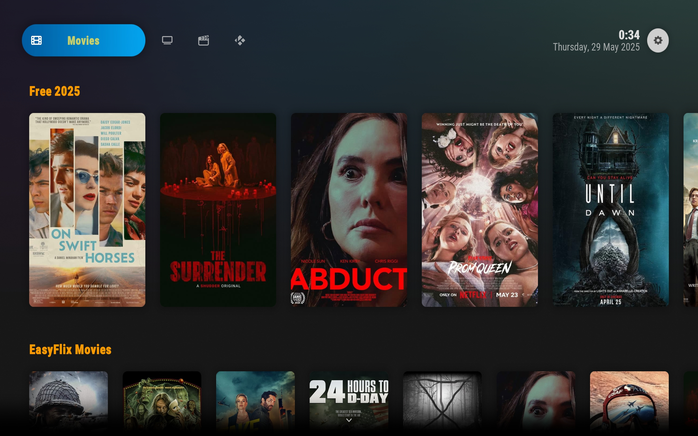
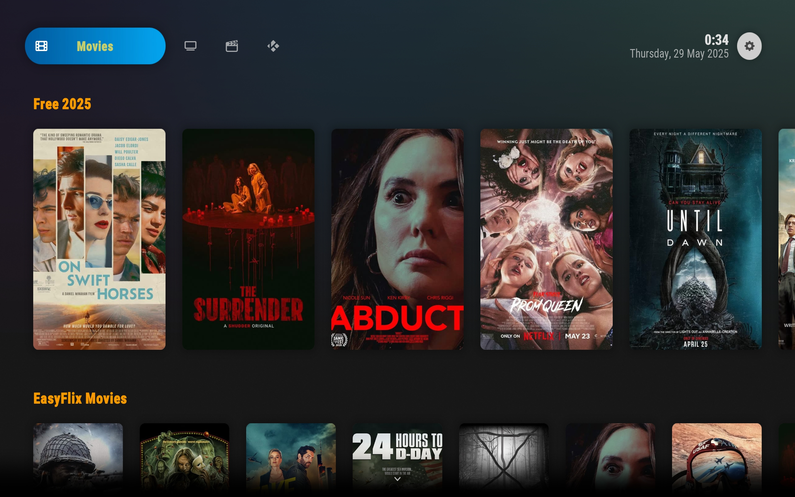
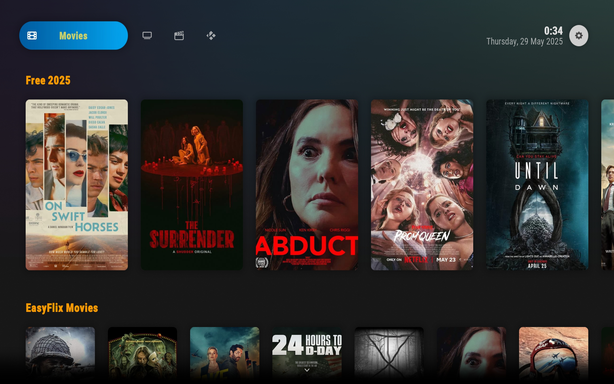

Bienvenido a luc_kodi.backups
Todo ,que se encuentra, aqui, son algúnos backups realizados por mi ,en la aplicación ,open source de kodi y que son de uso, exclusivo y personal mio. No me hago responsable ,del mal uso ,que se puede generar, en relación ,con la piratería, violación de derechos de autor y mas cosas que se pueden generar en el detrimento, de las grandes plataformas de streaming o televisiones de pago. El propósito, de esta repo ,es solo de uso personal y de enseñanza propia.
Debrid-sub.ES(skin Nimbus-KODI 21) zip
Palantir 3 (Arctic Horizon 2 -Kodi 21) zip
Palantir3(skin Titan Bingie Mod-KODI 21.1)v.4 zip
Fen light-sub.RO(skin Fentastic.KODI-21.2)v.3 zip
Debrid-sub.RO(skin Arctic Zephyr Reloaded-KODI 21.2)v.2 zip
Debrid-sub.RO(skin Arctic Horizon 2-KODI-21.2)v.3 zip
Debrid-sub.RO(skin Arctic Zephyr Resurrección 2-KODI 21.1) v.3 zip
Debrid-sub.RO(skin Estuary MOD V2-KODI 21.2)v.6 zip
Debrid-sub.RO(skin Titan Bingie mod-KOdI-21.2) v.5 zip
Seren-sub.RO(skin Nimbus-KODI 21.2)v.2 zip
Debrid-sub.RO(skin Arctic Fuse 2-KODI 21.2)v.4 zip
Debrid-sub.RO(skin Aeon Nox 5-KODI 21.1) zip
Palantir(skin Arctic Fuse 2-KODI 21.1)v.1 zip
Debrid-sub.RO(skin AeonNox Silvo-KODI 21.2)v.5 zip
Debrid-sub.RO(skin Altus-KODI 21.1)v.2 zip
Debrid-sub.RO(skin Confluence-KODI 21.2) zip
Debrid-sub.RO(skin mp3 HD mod-KODI 21.2)v.2 zip
Debrid-sub.RO(skin Arctic Zephyr Resurrection-ligth view-KODI 21.2)v.1 zip
Debrid-sub.RO(skin Arctic Zephyr Resurrection darker view-KODI 21.2)v.1 zip
Debrid-sub.RO(skin simpleTOUCHreloaded-KODI 21.2) zip
Just-Free-sub.RO(skin Arctic Horizon 2-KODI 21.2)v.1 zip

Just-Free-sub.RO(skin Arctic Zephyr Resurrection-KODI 21.2) zip
Just-Free-sub.RO(skin Fentastic-KODI 21.2)v.1 zip
Fen light-sub.RO(skin Arctic Fuse 2-KODI 21.2)v.1 zip
FEN light-sub.RO(skin Actic Fuse 2-KODI 22)v.1 zip
Debrid-sub.RO(skin Estuary MOD v.2-KODI 22)v.1 zip


 
